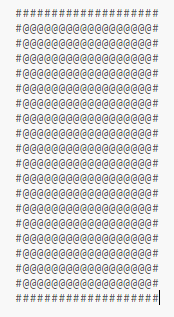
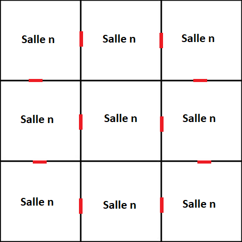
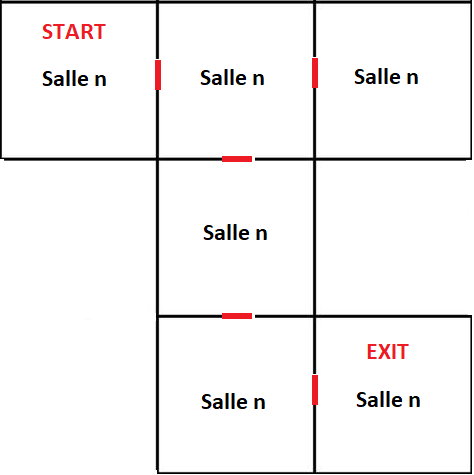

Idée de base
L'idée de base est de construire chaque pièce du jeu avec un fichier txt, chaque personnage représentant un élément de la pièce. Par exemple, nous avons le modèle de pièce de base qui contient tous les @s (espaces vides) et #s pour les murs extérieurs.
Nous pouvons alors créer assez rapidement de nombreuses salles différentes et les organiser en une carte pour l'étage actuel des jeux. Si nous randomisons cela à chaque fois, et avec suffisamment de pièces, nous devrions être en mesure de créer une nouvelle expérience pour le joueur à chaque nouveau jeu. L'objectif du jeu sera de naviguer dans ces salles et de trouver la sortie qui permettra au joueur de passer au niveau suivant. Ceci sera répété jusqu'à ce que tous les niveaux soient terminés et que le joueur batte le jeu.
Il pourrait également être possible d'organiser les salles selon des modèles plus intéressants pour créer une disposition unique à chaque nouveau jeu. La logique pour cela serait un peu plus compliquée mais rendrait le jeu beaucoup plus intéressant.
